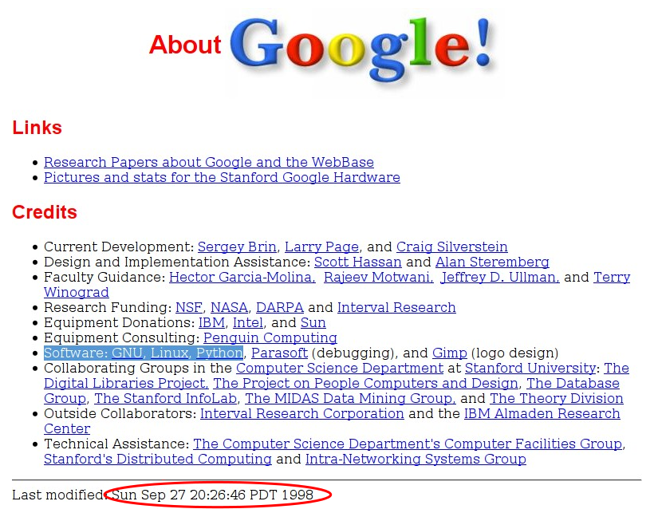
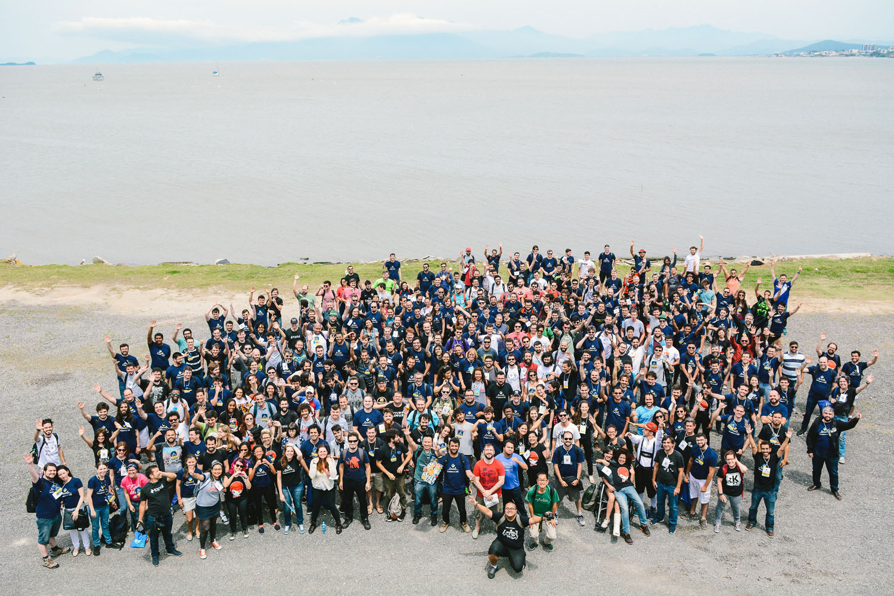
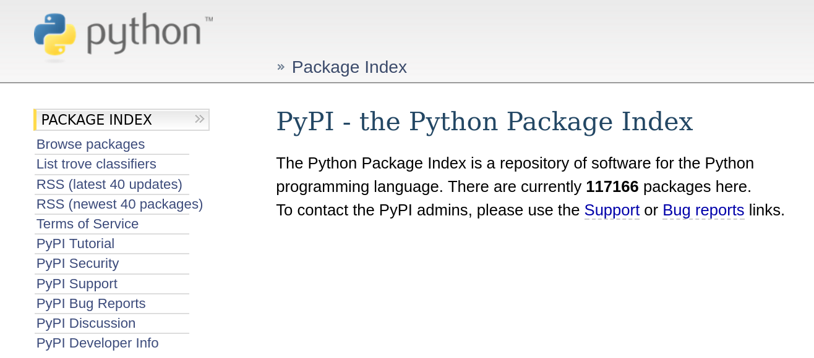

Gênero e Número: Python ajudando a entender as questões de gênero brasileiras
Turicas aka Álvaro Justen
Fórum Goiano de Software Livre
18 de novembro de 2017 - Goiânia/GO
Turicas, prazer! =)
Sigam-me os bons:
{twitter,
github,
youtube,
slideshare,
instagram}
/turicas
turicas@pythonic.cafe
Blog: turicas.info
bit.ly/gn-fgsl

escoladedados.org

generonumero.media
impacto.jor.br

simplefractal.com


pythonic.cafe
youtube.com/c/PythonicCafe
Software Livre

Python


Investigar as questões de gênero no Brasil e América Latina, com dados abertos e técnicas de jornalismo de dados.
Equipe Gênero e Número


Rua: substantivo (ainda) masculino

youtu.be/7yQ8U2tFFq4
“ Dados abertos são dados que podem ser livremente usados, reutilizados e redistribuídos por qualquer pessoa - sujeitos, no máximo, à exigência de atribuição da fonte e compartilhamento pelas mesmas regras. ”-- OpenData Handbook (definição de Open Definition)
Desafios
Maior parte do tempo dos projetos de análise de dados

Obtendo...

Verificando...

Limpando...

“ O nível de acessibilidade de um dado é um filtro sobre quem conseguirá utilizá-lo. ”
Dados Tabulares: Qual o Pior Formato?

youtu.be/mVkWZVtZDT0
Guido van Rossum


Top Programming Languages

Fonte: spectrum.ieee.org/computing/software/the-2017-top-programming-languages
Primeiro Programa
print("Olá, #CapiConf Mini!")Nada de parênteses, nada de chaves!
if condicao1 and condicao2:
comando1
if condicao3 or condicao4:
comando2
comando3
elif 5 < x <= 10:
comando4
elif condicao6:
comando5
else:
comando6
Trabalhando com arquivos
arquivo_1 = open('nome.txt')
for linha in arquivo_1:
print(linha)
arquivo_1.close()
arquivo_2 = open('nome-2.txt', 'w')
arquivo_2.write('Python rules!')
arquivo_2.close()
Lendo CSVs
import csv
municipios = csv.DictReader(open('brasil.csv'))
for municipio in municipios:
if municipio['estado'] == 'PR':
densidade = int(municipio['habitantes']) / float(municipio['area'])
print(municipio['nome'] + '/PR' + ': ' + str(densidade) + ' hab/km²')
Navegando com Python
import urllib
url = 'http://pythonic.cafe/'
pagina = urllib.urlopen(url)
print(pagina.read())

Fonte: xkcd.com/353
>>> import this
The Zen of Python, by Tim Peters
Beautiful is better than ugly.
Explicit is better than implicit.
Simple is better than complex.
Complex is better than complicated.
Flat is better than nested.
Sparse is better than dense.
Readability counts.
Special cases aren't special enough to break the rules.
Although practicality beats purity.
Errors should never pass silently.
Unless explicitly silenced.
In the face of ambiguity, refuse the temptation to guess.
There should be one-- and preferably only one --obvious way to do it.
Although that way may not be obvious at first unless you're Dutch.
Now is better than never.
Although never is often better than *right* now.
If the implementation is hard to explain, it's a bad idea.
If the implementation is easy to explain, it may be a good idea.
Namespaces are one honking great idea -- let's do more of those!
Um monte de gente linda
PythonBrasil[12], Florianópolis (outubro de 2016)
Python Package Index
pypi.python.org
Para saber mais
Palestra: O Fantástico Mundo de Python
Encontro do GruPy-PR + OpenDevCommunity (22 de julho de 2017)
Classificando Logradouros por Gênero
(nível fácil)


Capturando Dados Históricos das Olimpíadas
(nível médio)

rows to the rescue!
pip install rows # Python Package Index
apt-get install rows # Debian
dnf install rows # Fedora
github.com/turicas/rows


csv com Python + rows
import rows
table1 = rows.import_from_csv('data/brazilian-cities.csv')
for row in table1:
print(row)
Resultado
Row(state='PR',
city='Curitiba',
inhabitants=1751907,
area=435.04)
xls com Python + rows
import rows
table2 = rows.import_from_xls('data/brazilian-cities.xls')
for row in table2:
print(row)
html com Python + rows
import rows
table3 = rows.import_from_html('data/brazilian-cities.html')
for row in table3:
print(row)
Resultado
-
Consistente
- Independente do formato
- API única
-
Tipos automaticamente identificados e convertidos
- Mesmo que o formato não possua esses metadados
import rows


Analisando Dados da Educação Superior
(parece fácil, mas é difícil)

#fikdik
journalismcourses.org
20 de novembro a 17 de dezembro de 2017
Online e GRATUITO
coda.escoladedados.org
25 e 26 de novembro de 2017
São Paulo/SP